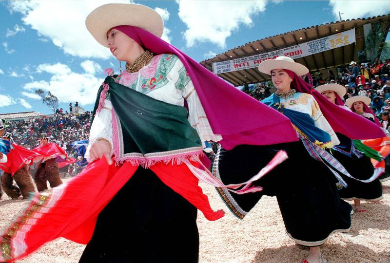
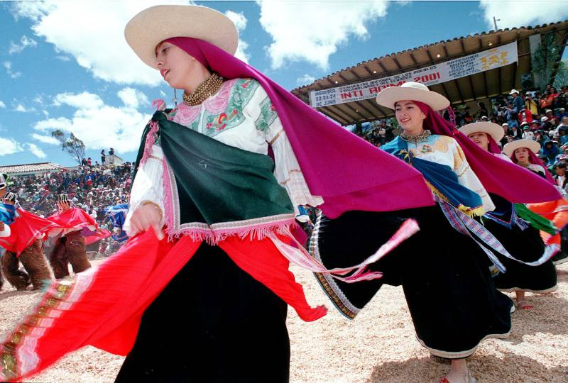

<<<<<<< HEAD
{{parroquiaEnviada.nombreParroquia}}
,
Regresar
 {{parroquiaEnviada.ubicacion}}
{{parroquiaEnviada.idLenguaNativa}}
{{parroquiaEnviada.descripcion}}
=======
Descripción

Comunidad de Natabuela
Imbabura, Ibarra
Este pueblo esta ubicado en la provincia de Imbabura, cantón Antonio Ante: parroquias Andrade Marín, San Francisco de Natabuela, San José de Chaltura, y en el cantón Ibarra, parroquia San Antonio. Su idioma original es el kichwa pero lamentablemente ya no se habla en este pueblo, el español es su lengua actual. La población aproximada de este pueblo es de 6 200, dato que no es exacto debido a la falta de un censo poblacional que verifique el dato citado, el pueblo Natabuela se encuentra asentado en 17 comunidades.
>>>>>>> ba2cb5d734b787af1f60ca91f311565feeeafc4d
{{parroquiaEnviada.ubicacion}}
{{parroquiaEnviada.idLenguaNativa}}
{{parroquiaEnviada.descripcion}}
=======
Descripción

Comunidad de Natabuela
Imbabura, Ibarra
Este pueblo esta ubicado en la provincia de Imbabura, cantón Antonio Ante: parroquias Andrade Marín, San Francisco de Natabuela, San José de Chaltura, y en el cantón Ibarra, parroquia San Antonio. Su idioma original es el kichwa pero lamentablemente ya no se habla en este pueblo, el español es su lengua actual. La población aproximada de este pueblo es de 6 200, dato que no es exacto debido a la falta de un censo poblacional que verifique el dato citado, el pueblo Natabuela se encuentra asentado en 17 comunidades.
>>>>>>> ba2cb5d734b787af1f60ca91f311565feeeafc4d